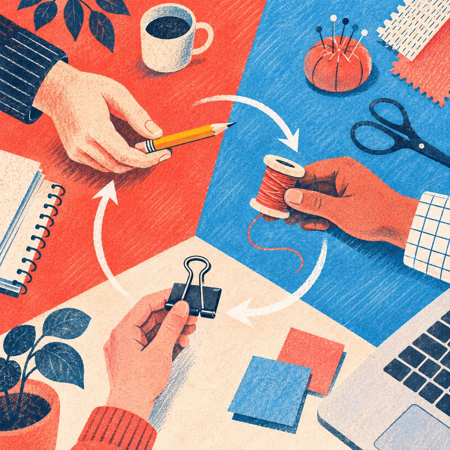

个人发展
大树乡谈 · 微信公众号合集

判断与决策
不要拿身家性命试错

学习方法
日进一步的简单方法

人际关系
普通人怎么结交更多人脉？
文章目录
按主题浏览
- 58
- 57
- 56
- 55
- 54
- 53
- 52
- 51
- 50
- 49
- 48
- 47打破牢笼，找到属于自己的职业未来合集标注付费
- 46
- 45
- 44
- 43
- 42
- 41
- 40
- 39
- 38
- 37
- 36全球凛冬将至，我们个人该如何做好应对？合集标注付费
- 35
- 34
- 33
- 32
- 31
- 30
- 29破局未来：2022年的中国经济与政策调控合集标注付费
- 28
- 27
- 26
- 25
- 24
- 23
- 22
- 21
- 20
- 19
- 18中央部委公务员的待遇与发展合集标注付费
- 17
- 16
- 15
- 14
- 13
- 12
- 11
- 10
- 09
- 082022年中国房地产政策、房价及个人选择合集标注付费
- 07
- 06
- 05
- 04
- 03
- 02
- 01